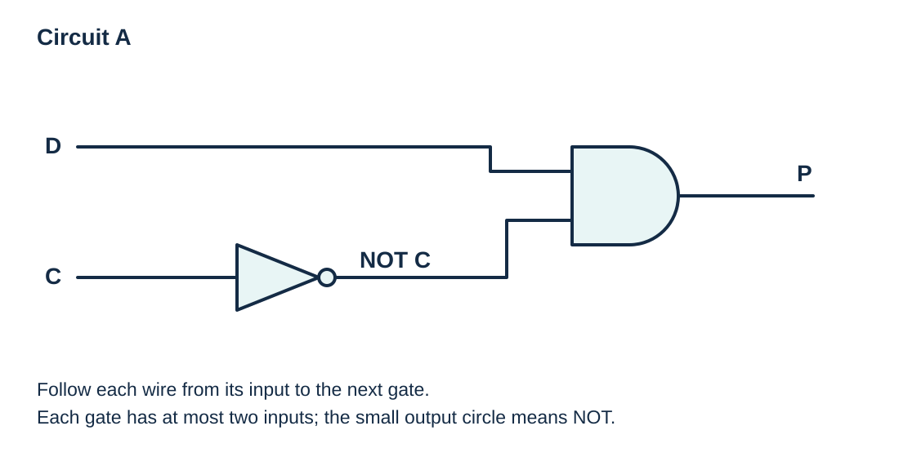

From a problem or expression to a circuit and table
Visual overview
Circuit A: permission rule

Visual transcript
- C passes through NOT before entering AND.
- D enters the other AND input; the final output is P.
Translate the complete condition
Start by defining each variable and its active value. A deterministic rule must say exactly when the output is 1 and when it is 0. Preserve each AND, OR and NOT relationship with explicit brackets. In the door example, D = 1 means a valid request and C = 1 means the lock condition is active; permission is 1 exactly when D is 1 and C is 0.
Connect words, expression, circuit and table
- Words to expression: A valid request and an inactive lock give P = D AND (NOT C). Both conditions are required.
- Expression to circuit: C feeds NOT first. That result and D feed a two-input AND. Label the output P; the small circle belongs on NOT’s output, before AND.
- Words or expression to table: List DC as 00, 01, 10, 11. Calculate NOT C, then P. Check each P against the original permission condition.
- Check the alternative: NOT (D AND C) returns 1 for DC = 00, granting permission without a valid request. One counterexample disproves equivalence.
Construct a cascade from an expression
For three conditions, keep two inputs per gate. A lamp rule “S is on and both U and V are off” becomes L = S AND ((NOT U) AND (NOT V)). Build NOT U and NOT V, combine them with AND, then combine that intermediate result with S. This whole circuit has three independent inputs and eight rows, although each AND gate still has two inputs.
Lamp construction with intermediate values
| S | U | V | NOT U | NOT V | (NOT U) AND (NOT V) | L |
|---|---|---|---|---|---|---|
| 0 | 0 | 0 | 1 | 1 | 1 | 0 |
| 0 | 0 | 1 | 1 | 0 | 0 | 0 |
| 0 | 1 | 0 | 0 | 1 | 0 | 0 |
| 0 | 1 | 1 | 0 | 0 | 0 | 0 |
| 1 | 0 | 0 | 1 | 1 | 1 | 1 |
| 1 | 0 | 1 | 1 | 0 | 0 | 0 |
| 1 | 1 | 0 | 0 | 1 | 0 | 0 |
| 1 | 1 | 1 | 0 | 0 | 0 | 0 |
Verify the constructed result
Only SUV = 100 lights the lamp. This is checked against the condition as well as the constructed expression. Draw the provided cascade before using the separate practice conditions; the number of written conditions does not justify drawing an unsupported three-input gate.
Worked example · A door permission rule in four forms
- Problem
Permission P is granted only when a valid request D is present and the lock condition C is off.
- Expression and circuit
P = D AND NOT C. In Circuit A the inversion occurs before the AND operation.
- Complete table
D C | NOT C | P 0 0 | 1 | 0 0 1 | 0 | 0 1 0 | 1 | 1 1 1 | 0 | 0 - Statement check
The only permitted case has a valid request and no lock condition.
A complete three-input cascade

Visual transcript
- Two NOT gates feed an AND; its output and S feed the final AND. Only input SUV = 100 gives L = 1.
Core explanation · Exam essentials
- Define input meanings, translate negations and brackets, then build gates from inner operations outward.
- Check all input rows against the original statement, not merely your own expression.